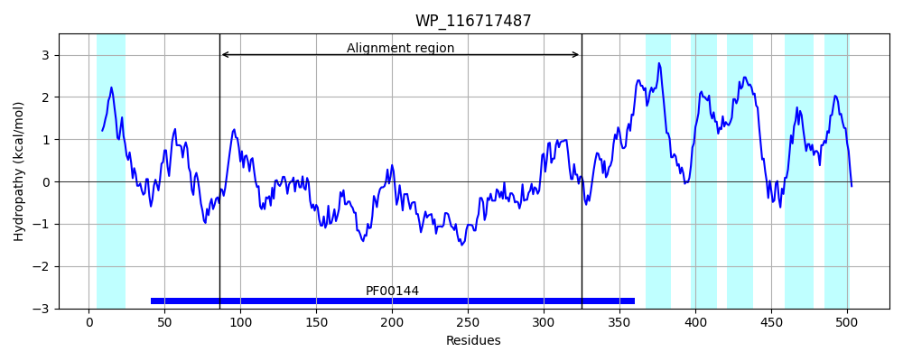
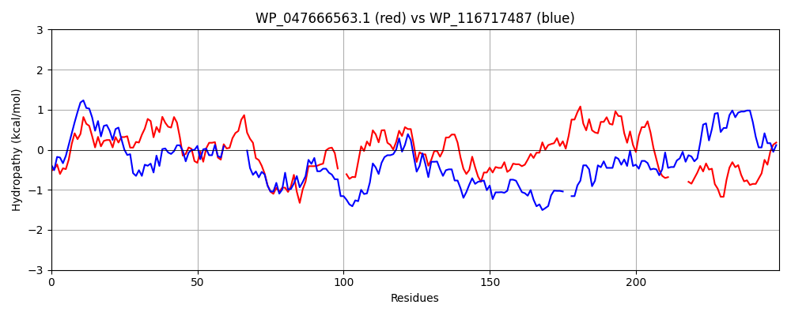

Hit Accession: WP_116717487
Hit TCID: 9.B.306.1.3
Hit Description: gnl|BL_ORD_ID|21793 gnl|TC-DB|WP_116717487|9.B.306.1.3 class A beta-lactamase-related serine hydrolase [Anaerolineales bacterium]
Mach Len: 249
e:0.000000
Query TMS Count : 1
Hit TMS Count: 6
TMS-Overlap Score: 0.500000
Predicted Substrates:None
BLAST Alignment:
Score: 189 , Bit scores: 77 bits, E-value: 1.5e-15, Alignment length: 249, Percentage identity: 24
Query: 82 TQYEIASLSKTMTASLLLEAIRRGEVTAQTPVSALVPEIVSPVRDVTLEQLVSHRSGLPPLTASVGQRLAILSDIARRQNPWRYDRPALIAMMNQATLQ--PTKWFDYSNAGFALLGLALERASHRDFATLMAQRVFAPTGMQGAEVARHNTPASPTFTMGWSASGFPQQPWVMDAFVPAGGVRATIVDMAKYAQALLAANLAGSEGMRPLF------ATDDPDSRVGYAWFTTRVRGREIVWHDGQSG 322
T++ +ASLSK+ TA +L +G + Q P+ + + +T+ QL++H SGL P RL + A R+ D I + + L+ P + +DY+N G+ LL +E+AS + +A + + +F P M+ + ++ + ++ + +G + W + G + +T D+ + QAL L + +F D P GY T++ GR ++ G SG
Sbjct: 86 TRFHLASLSKSFTAMAILILQSQGRLNVQDPICNHMVRCSEAWQGITIHQLLTHTSGLSP-------RLHDIVSKAARKPEAPPDPGYYIEIAGEVPLETRPGEQYDYNNFGYTLLAHIIEQASGQSYADFLDKNIFTPLNMRDSGYEDSSSGGALGYSYRYDTTGAEYEQWPISD--GEGQLYSTTGDLYLWDQALYTDQLLPQAELETMFERYVPQTIDVPGFGWGYGVLVTKLLGRPVIAGAGGSG 325 | Protein Hydropathy Plots: |
|---|
 |  |
Pairwise Alignment-Hydropathy Plot:
|
|---|
|  |